Un mundo nunca visto
Generación propia: pilares de piedra, mesetas flotantes, cañones y un mar de Éter del Vacío. Sin sol ni luna: un eclipse, un planeta anillado y auroras.
Atravesá el portal hacia una dimensión de eclipse eterno: pilares colosales, islas flotantes, aldeas con misiones y criaturas nunca vistas, hasta despertar a dos jefes legendarios.
Nyxheim agrega una dimensión completa con su propia progresión: exploración, botín, jefes y equipo que vale la pena conseguir.
Generación propia: pilares de piedra, mesetas flotantes, cañones y un mar de Éter del Vacío. Sin sol ni luna: un eclipse, un planeta anillado y auroras.
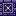
Ciudadelas, torres de 46 bloques, mazmorras subterráneas y santuarios en el cielo, con cofres de botín y spawners.
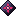
El Coloso de Nyx y la Soberana del Eclipse cambian de táctica a medida que pierden vida. Cada uno suelta equipo único.
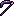
Embestidas, rayos en cadena y terremotos con clic derecho. Cada arma tiene su habilidad y su enfriamiento.
Voidita y la armadura Abisal (mejora de la netherita) con bonificaciones al llevar el conjunto completo.
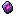
Los Nyxianos te piden cacerías y materiales. Sus Fragmentos de Sello abren el camino hacia los jefes.
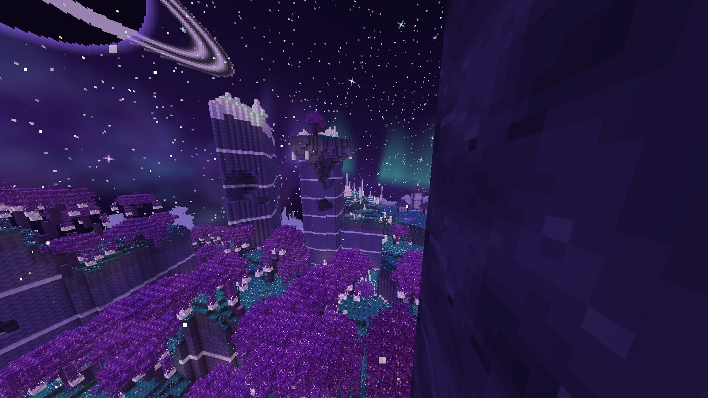
Bosque CrepuscularNyxheim tiene su propio generador: pilares de cientos de bloques con vetas de colores, mesetas flotantes, cañones y archipiélagos. La superficie es Musgo Estelar sobre Limo Umbrío, con árboles de hojas translúcidas.
Aldeas, ciudadelas, torres, mazmorras, santuarios y puestos de cultistas, con cofres de botín propios, spawners y decoración pensada para cada lugar.
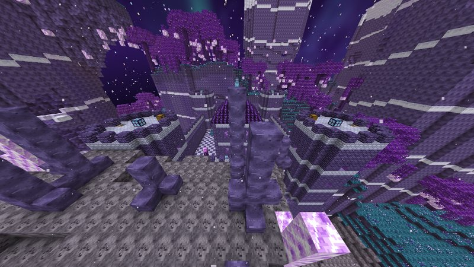
Murallas, cuatro torres y una torre del homenaje con sala del trono. En el patio está el Altar del Eclipse donde se despierta al Coloso.
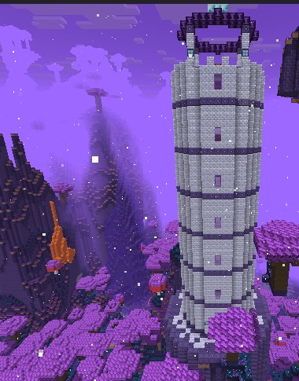
Escalera de caracol, seis pisos con bibliotecas y laboratorios, y un observatorio con el altar donde se invoca a la Soberana.
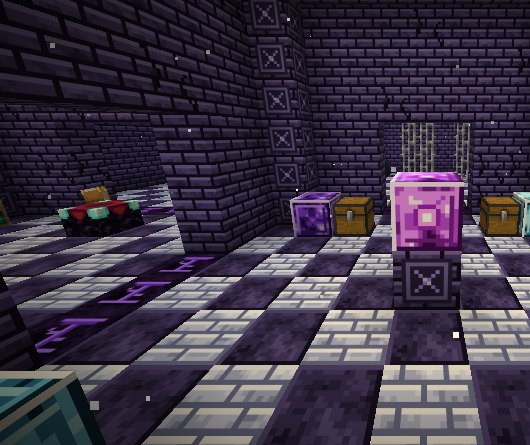
Un túnel desciende hasta una red de salas: tesoro, celdas, armería, biblioteca y salas oscuras con spawners.
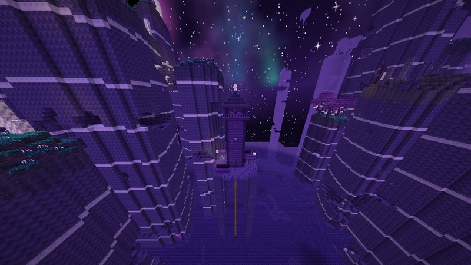
Torre de los cultistas sobre pilotes, con jaulas, tiendas y botín. A veces la custodia un Heraldo con el Amuleto del Eclipse.
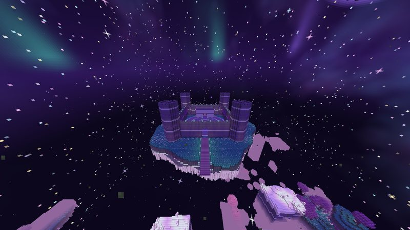
Fortaleza en una mega isla flotante, con cuatro torres y el Altar del Ocaso. Un rayo de luz bajo su muelle te eleva hasta ella.
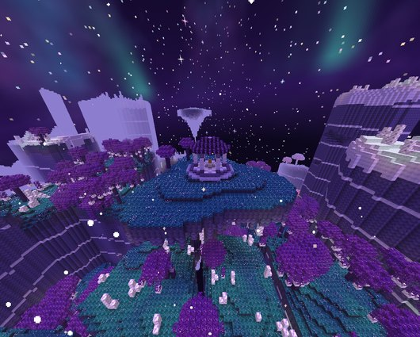
Templetes con cúpula de obsidiana rúnica en lo alto de las islas. El premio: plantillas abisales, coronas y hasta élitros.
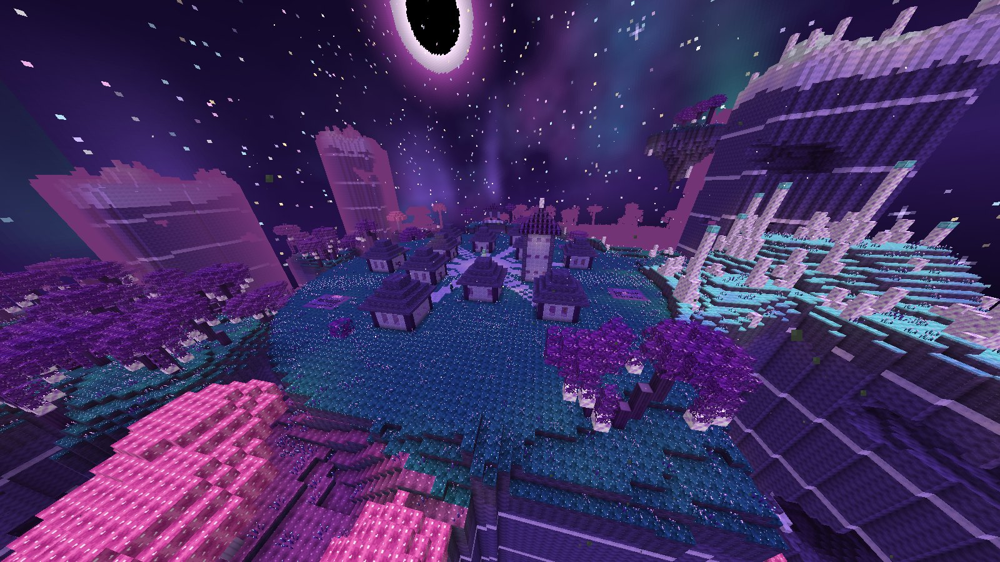
Aldea NyxianaEn los valles de Nyxheim hay aldeas con plaza, fuente de Éter, casas, cultivos y la torre del Anciano. Mientras estés cerca, los monstruos no aparecen.
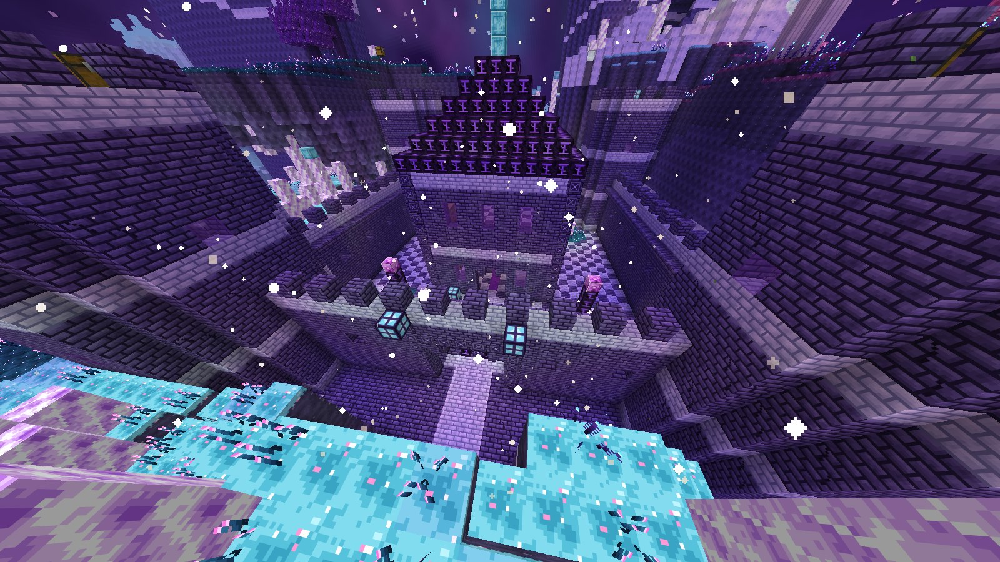
Altar del EclipseEl Sigilo y la Corona no se fabrican: se ganan ayudando a la aldea. El Altar del Eclipse está en el patio de cada Ciudadela y en la cima de cada Torre, con espacio de sobra para la pelea.
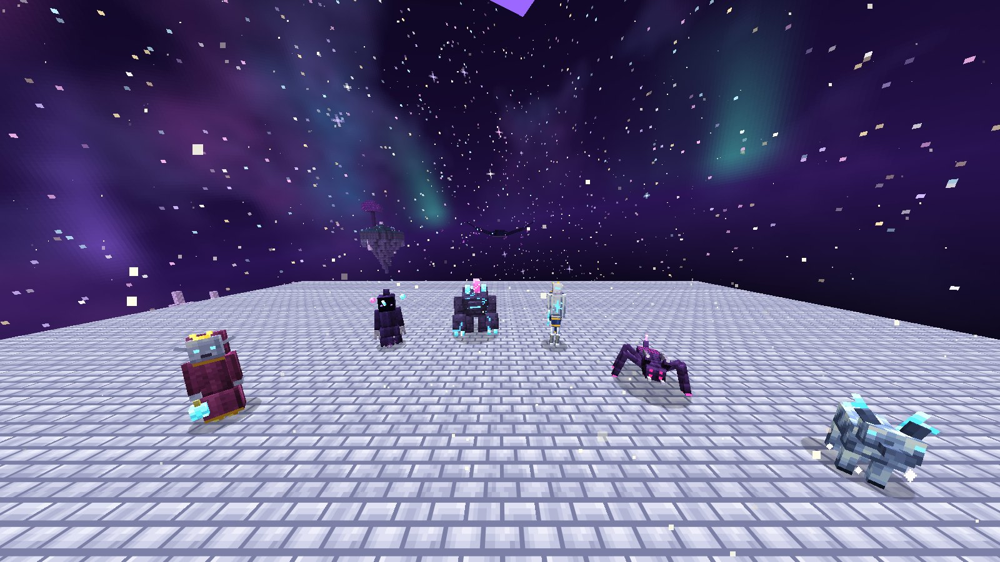
BestiarioNingún mob es un recolor: cada uno tiene modelo, animaciones y texturas propias, con partes que brillan en la oscuridad. Algunas criaturas se pueden domar.
Espectro flotante que se abalanza sobre vos y aplica Oscuridad.
Mole de cristal blindada que golpea el suelo.
Trepa paredes, marchita y parpadea detrás tuyo.
Dispara fragmentos lunares que te hacen levitar.
Se doma con lunarita y pelea a tu lado.
Domala, ponele montura y volá por el cielo de Nyxheim.
Pelaje de cielo estrellado y astas de cristal. Se cría con Fruto Estelar y da carne.
Revolotea dejando polvo brillante; suelta Polvo lunar.
Una boca con seis patas que salta sobre vos; su mordida da hambre.
Avispa del vacío que pica en picada y se aleja para volver a atacar.
Vive en los Puestos del Eclipse; su hoz da Marchitamiento. Ataca aldeas.
Cultista de élite con estandarte. Suelta el Amuleto del Eclipse.
Dispara en abanico e invoca Aguijones. Suelta el Tótem del Eclipse.
Líderes con misiones, y aldeanos que se reproducen con Fruto Estelar y trabajan de granjero, encantador, herrero o alquimista.
Cada jefe tiene barra de vida, fases con ataques nuevos y una recompensa que desbloquea el mejor equipo del mod.
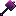
Martillo del Coloso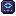
Plantillas abisales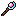
Báculo Lunar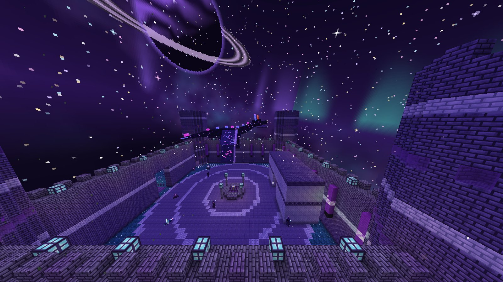
Jefe finalUn dragón celeste de más de 15 bloques que vuela alrededor del Castillo Celeste. Cuatro Prismas Estelares en las torres la curan con sus rayos: destruilos primero.
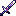
Filo Devorador de EstrellasCorona EstelarSe activan con clic derecho. Las herramientas de voidita rinden como netherita y aguantan 2400 usos.
Embestida de 9 bloques que atraviesa a los enemigos, los daña y los marchita.
⏱ 3 sUn rayo de 40 bloques que salta hasta a 5 enemigos y los ralentiza.
⏱ 1,25 sGolpe en área de 7 bloques que lanza a todos por los aires.
⏱ 5 s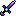
Nivel netherita, encantable y reparable con lingotes de voidita.
2400 usos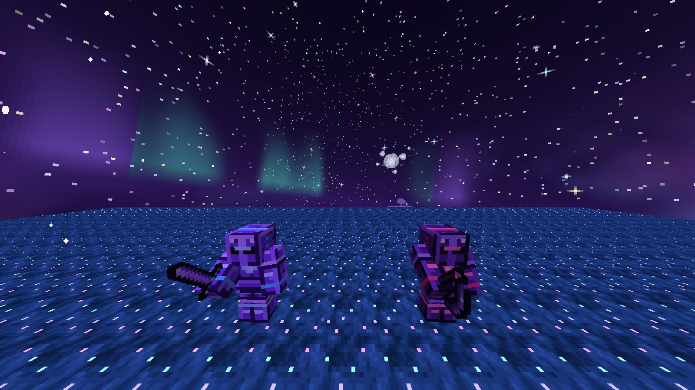
Abisal · VoiditaSe arma a mitad de partida: con obsidiana, amatista, oro y unos pocos diamantes ya podés cruzar.
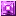
Núcleo de Nyx ×4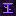
Obsidiana rúnica ×18Un recorrido recomendado desde que cruzás el portal hasta tener el mejor equipo del mod.
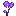
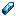
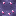
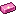
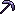
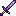
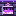
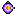
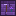
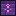
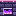
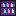
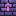
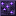
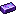
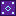
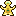
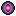
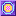
Es un mod de Fabric: un solo archivo .jar que va en la carpeta mods. Es el mismo archivo para Windows, Linux y macOS.
~/Library/Application Support/minecraft/mods.nyxheim-0.8.1.jar (o arrastralo a la ventana).mods del servidor y en la de cada jugador.Todas tomadas en Minecraft 26.3 con Nyxheim 0.8.1, sin shaders ni paquetes de texturas.
Sí. Los mods de Fabric son un único archivo .jar independiente del sistema operativo: el mismo archivo sirve en los tres.
No. Podés agregarlo a un mundo existente. El terreno nuevo, las aldeas y los altares aparecen en las zonas de Nyxheim que todavía no exploraste.
No. Nyxheim es exclusivo de Fabric y requiere Fabric API.
Sí. Instalá el .jar y Fabric API en el servidor y en el cliente de cada jugador.
Explorando Nyxheim. Aldeas, ciudadelas, torres y bóvedas aparecen aproximadamente una por cada región de 240×240 bloques; los santuarios celestes, en lo alto de algunas islas flotantes. El Anciano de cada aldea te indica dónde queda la Ciudadela o la Torre más cercana.
Hacé las misiones de una aldea Nyxiana: el Anciano canjea 4 Fragmentos de Sello por el Sigilo de Nyx (Coloso) y el Ojo del Coloso por la Corona del Eclipse (Soberana). Usalos sobre el Altar del Eclipse de una Ciudadela o de una Torre.
Seguí la guía de progreso: juntá madera y piedra de Nyx, buscá lunarita y astralita, armá la Mesa de Nyx y encontrá una aldea Nyxiana. Sus misiones te llevan a los jefes.
Venciendo el Asedio del Eclipse (usá el Amuleto del Eclipse dentro de una aldea) o matando a un Invocador del Vacío durante el asedio. El amuleto lo suelta el Heraldo de los Puestos del Eclipse.
El equipo de Nyxheim solo se fabrica en la Mesa de Nyx. Su receta está en el paso 3 de la guía.
Buscá el rayo de luz que sale del suelo debajo del muelle del castillo: es la Plataforma de Ascenso. Pisala y te lleva arriba. El Anciano de cualquier aldea te dice dónde queda si tenés el Núcleo Titánico o el Corazón del Eclipse.
No. Todas las texturas y modelos del mod son propios, incluidas las criaturas y el cielo.
Descargá Nyxheim gratis y empezá a juntar los materiales del portal.